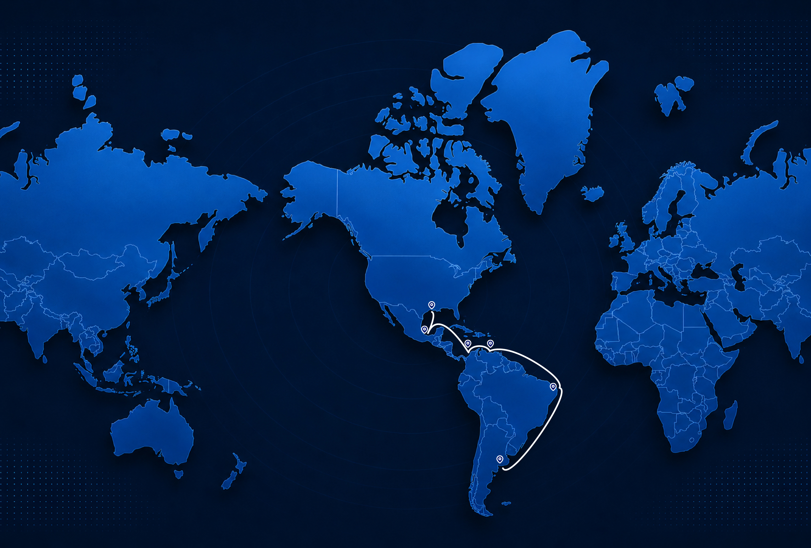
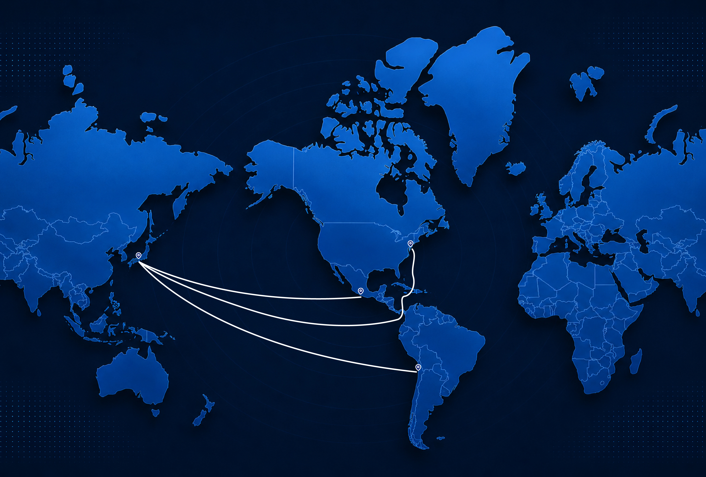
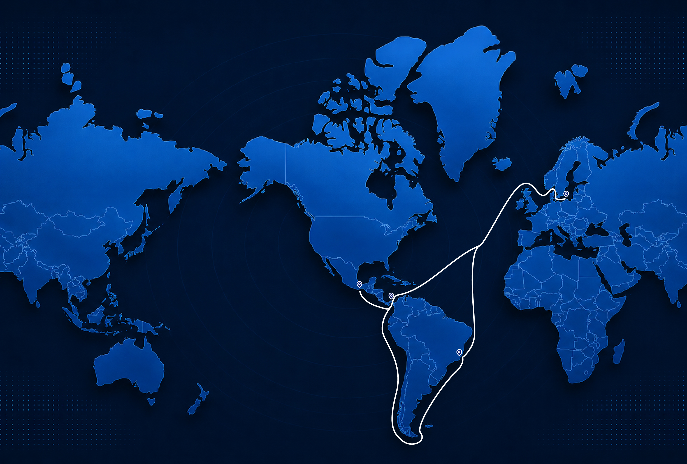

Reliable and efficient shipping solutions across key international trade lanes, connecting major exporting and importing regions through flexible and commercially driven logistics strategies.
One of the world's most active bulk shipping corridors, the Black Sea and Mediterranean route bridges Europe's leading producers with prime markets across Western Europe, the Americas, and beyond. For decades, Seacape has been a trusted leader in this region, seamlessly driving the maritime carriage of grains, steel, and high-value commodities.
Our coverage includes the major loading ports of Ukraine, Türkiye, and Belgium, driving efficient transatlantic and regional trade to strategic discharge hubs across Spain, Türkiye, Germany, and key Western markets.
With our headquarters in Miami, Florida, Seacape has unparalleled access and knowledge of US East Coast and Gulf ports. This corridor serves as a pivotal gateway for US agricultural exports, steel imports, and the strategic movement of bulk commodities between North America and global markets.
Our Miami office provides real-time coordination and hands-on support for all shipments moving through this corridor, ensuring regulatory compliance, port efficiency, and seamless cargo handling.

The Asian corridor stands as our most active transpacific route. Through this established trade lane, Seacape manages robust two-way trade flows, seamlessly connecting producers and buyers of steel, concentrates, and other bulk commodities across Japan, China, South Korea, and Southeast Asia with the Americas. This comprehensive network optimizes the supply chain between both regions, ensuring the direct carriage of essential cargoes to the entire American West Coast.
Our established relationships with Asian charterers, port agents, and shipowners allow us to execute efficiently in this highly competitive market, providing our clients with reliable coverage and competitive rates.

South America represents one of the most dynamic trade corridors for Seacape. With direct office representation through our Santiago, Chile operation and regional presence in Peru and Brazil, we are uniquely positioned to service this market and its evolving demands from both coasts.
Our operational coverage across the region is comprehensive, driven by deep-rooted expertise within a flexible and rapidly expanding market. Among our highest-volume fixtures are steel, grains, and concentrates, seamlessly driving cargo flows from the Pacific coast to the Atlantic. We aim to deliver a fully integrated service throughout the region, ensuring maximum coverage to satisfy the unique demands of this market with utmost efficiency.
For the Continent/Baltic to West Coast South America (WCSA) route, we primarily focus on prompt cargo opportunities, including fertilizers, grains, and other bulk commodities. This trade offers attractive employment prospects, supported by a steady flow of cargoes and strong seasonal grain programs.
During the respective export seasons, the market provides consistent volume and flexibility, making it an interesting and reliable trading area for geared bulk carriers.

Contact our team to discuss availability, rates, and scheduling for your next shipment.
Contact Our Team